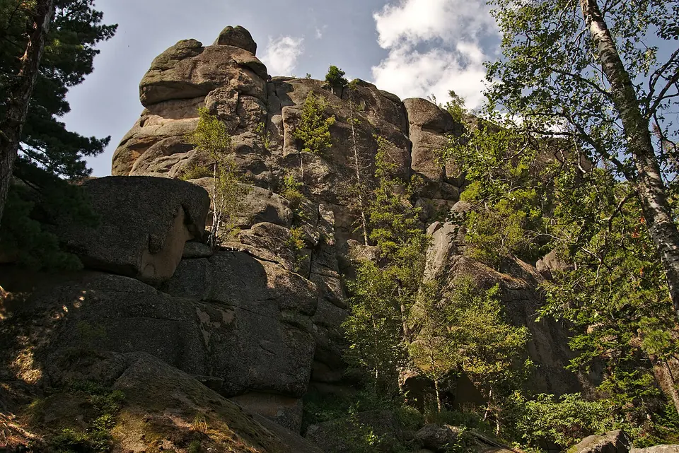

Фотография временно недоступнаФото: Alexander Klink, 2017 · CC BY 4.0Природа · КрасноярскНациональный парк «Красноярские Столбы»Лесные маршруты к скалам и смотровым площадкам национального парка. На карте отмечен Центральный вход; отсюда начинается подъём по Лалетинской дороге. Выбирайте маршрут и вход по официальной схеме парка, с учётом погоды и своей подготовки.Проложить маршрутОфициальная информация ↗